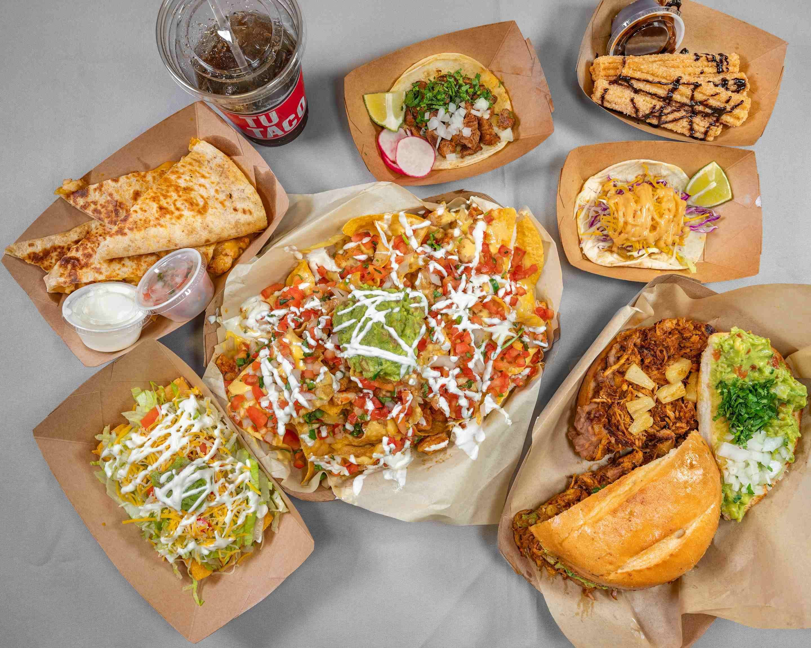
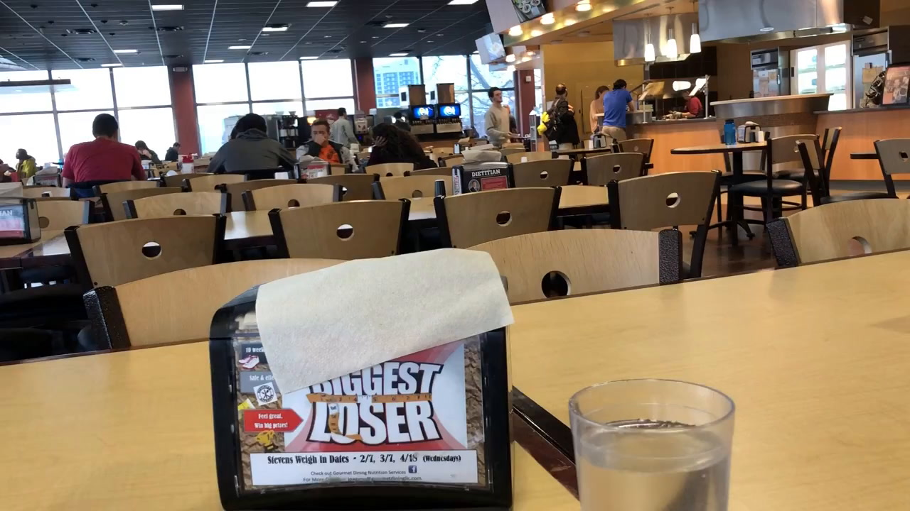
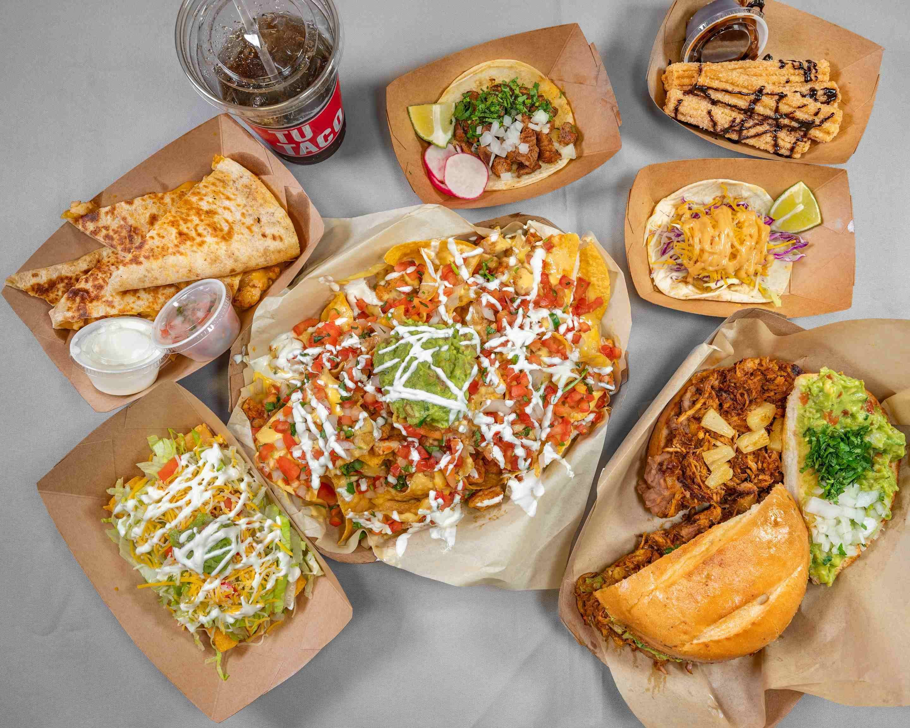
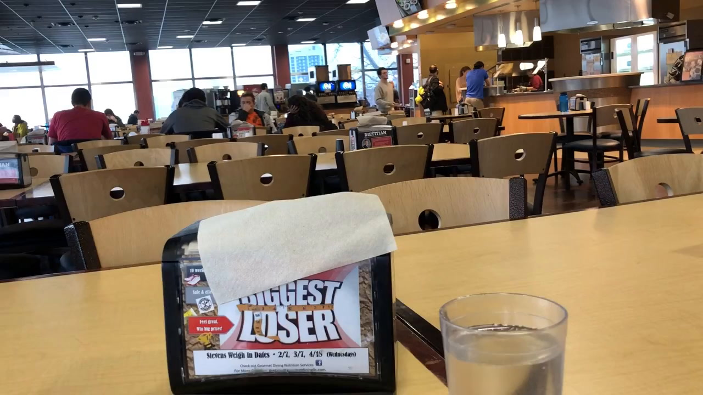

Learn More About College Eats
What is College Eats?
A place to learn about all the college dining locations offered on your campus, see real images of the food offerings, and read student reviews.
Why should I even use College Eats?
Always get the best (and most real!) information about the food on YOUR college campus.
Well, how do I use it?
See information about college dining by selecting a location on campus. Create an account to share your reviews and interact with others.
 


